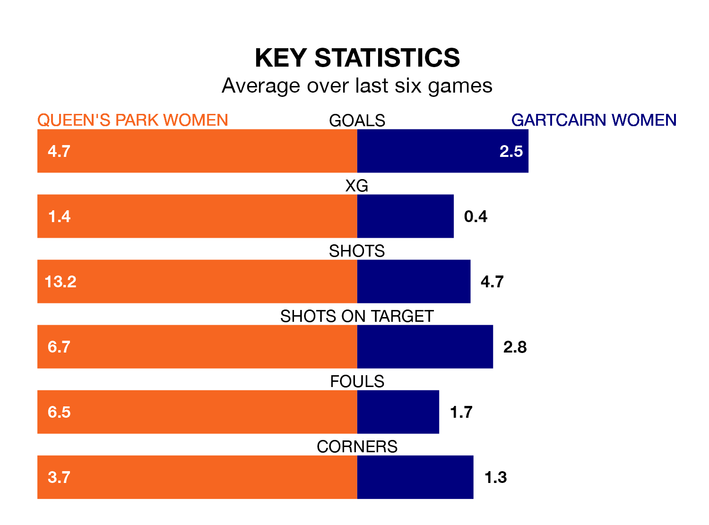

Queen's Park Women host Gartcairn Women in Sunday lunchtime's match at Lochinch Pavilion looking to bounce back from defeat last time out in SWPL 2.
Queen's Park, who sit top of the league after 21 games, fell to a 1-2 away defeat to Boroughmuir Thistle on March 17.
They face a Gartcairn side who picked up a win in their last match, a 2-1 victory against Glasgow Women, and who sit sixth in the table.
With 77 goals in 21 games so far this season, Queen's Park are the league's highest scorers with 3.7 goals per game. And they are conceding fewer than average, letting in 16 goals at a rate of 0.8 per game.
Gartcairn, meanwhile, are below average scorers, with 1.5 goals per game, compared to a league average of 1.9. They have conceded 2.8 goals per game.
The home side are in fantastic form in SWPL 2, with five wins and a draw from their last six games.
With five wins and one loss over that period, the visitors' form is slightly worse – they have taken 15 points from 18, compared to Queen's Park's 16.
In the last 10 years, Queen's Park and Gartcairn have played each other on seven occasions. Queen's Park won four of them and Gartcairn three.
On average, Queen's Park scored 2.6 goals and Gartcairn 1.6 in those matches.
Their last meeting was on January 21, when Gartcairn won 3-2 at home.
Updated: 12:39 (UTC), 26/03/24